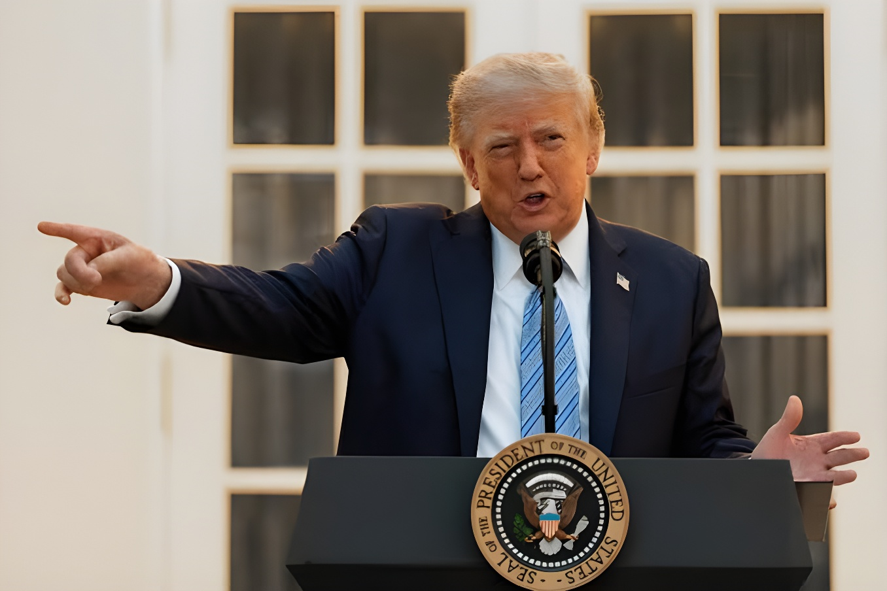

Le président américain Donald Trump a annoncé le 18 septembre 2026 interdire « avec effet immédiat » l'accès à la Maison-Blanche aux chaînes CNN et MS NOW (ex-MSNBC) ainsi qu'au média en ligne Politico, les accusant de relayer de fausses informations. Dès le lendemain, les accréditations de leurs journalistes ont été confisquées et l'entrée du complexe présidentiel leur a été refusée. Les trois rédactions dénoncent une atteinte inédite à la liberté de la presse et au Premier Amendement, dans ce qui constitue la plus large exclusion simultanée de médias jamais décidée par une administration américaine.
Vendredi 18 septembre 2026, Donald Trump a annoncé sur son réseau Truth Social interdire à CNN, à MS NOW (rebaptisée après le rachat de MSNBC) et à Politico l'accès à la Maison-Blanche « avec effet immédiat ». Le président a justifié sa décision en accusant les trois rédactions de diffuser des informations qu'il juge fausses, affirmant qu'elles ne devraient plus pouvoir « écrire ou relayer constamment des fictions et des mensonges » sur son administration. Il a averti que d'autres organes de presse pourraient subir le même sort.
La mesure est entrée en vigueur dès le lendemain : samedi, les journalistes des trois médias qui se sont présentés devant la résidence présidentielle se sont vu confisquer leur accréditation. À CNN, la correspondante en chef à la Maison-Blanche Betsy Klein n'a pas pu entrer dans l'enceinte ; à Politico, la correspondante Cheyenne Haslett a subi le même sort, le Secret Service lui retirant son badge d'accès sur instruction de la Maison-Blanche.
« D'autres médias propagateurs de fausses informations suivront. »
— Donald Trump, sur Truth Social, 18 septembre 2026L'Associated Press est déjà exclue du pool de journalistes présidentiel après avoir refusé d'adopter le nom de « golfe d'Amérique » voulu par Trump.
Trump annonce sur Truth Social le bannissement immédiat de CNN, MS NOW et Politico.
La Maison-Blanche applique la décision : les accréditations des trois rédactions sont retirées à l'entrée.
Trump menace d'élargir l'interdiction à d'autres médias jugés hostiles à son administration.
Dans un communiqué, CNN a qualifié l'interdiction d'atteinte illégale à son droit constitutionnel d'exercer le journalisme sans ingérence du gouvernement, rappelant soutenir pleinement son équipe à la Maison-Blanche. MS NOW a de son côté affirmé vouloir défendre ses droits garantis par le Premier Amendement et le rôle du journalisme indépendant, tandis que Politico a exprimé son soutien à sa correspondante privée d'accès, son rédacteur en chef évoquant une décision prise « il y a quelques minutes » par le Secret Service.
Les deux chaînes de télévision ont indiqué qu'elles continueraient de couvrir l'actualité de l'administration Trump malgré l'exclusion, tout comme Politico. Interrogé dans le Bureau ovale, Donald Trump a affirmé que sa décision résultait d'une accumulation de reportages qu'il juge déloyaux envers son administration au fil des dernières années, plutôt que d'un épisode isolé.
| Média | Réaction officielle |
|---|---|
| CNN | Dénonce une « atteinte illégale » à ses droits constitutionnels |
| MS NOW | Promet de défendre ses droits garantis par le 1ᵉʳ Amendement |
| Politico | Confirme le retrait du badge de sa correspondante, soutien affiché |
L'association des correspondants de la Maison-Blanche, présidée par Jacqui Heinrich (Fox News), a affiché son soutien aux journalistes visés, estimant qu'ils sont pris pour cible pour avoir simplement fait leur travail. Reporters sans frontières a également critiqué la décision, son directeur pour l'Amérique du Nord Clayton Weimers accusant le président de chercher à contrôler qui peut s'exprimer sur lui.
« Pris pour cible pour avoir simplement fait leur travail. »
— Jacqui Heinrich, présidente de l'association des correspondants de la Maison-Blanche, 19 septembre 2026Jamais une administration américaine n'avait banni simultanément trois rédactions majeures de l'enceinte présidentielle. Après l'exclusion ciblée de l'AP en 2025, cette décision marque un changement d'échelle dans les tensions entre la Maison-Blanche et les médias jugés critiques. Les trois groupes de presse ont laissé entendre qu'ils pourraient porter l'affaire devant la justice, tandis que la menace de Trump d'étendre l'interdiction à d'autres rédactions fait planer une incertitude durable sur l'accès des journalistes à la présidence américaine.
US President Donald Trump announced on September 18, 2026 that he was banning CNN, MS NOW (formerly MSNBC) and the online outlet Politico from the White House "with immediate effect," accusing them of spreading false information. The following day, their journalists' press credentials were confiscated and they were turned away from the presidential complex. All three newsrooms denounced an unprecedented attack on press freedom and the First Amendment, in what stands as the largest simultaneous exclusion of news outlets ever ordered by a US administration.
On Friday, September 18, 2026, Donald Trump announced on his Truth Social platform that CNN, MS NOW (renamed after the sale of MSNBC) and Politico were banned from the White House "with immediate effect." The president justified the move by accusing the three newsrooms of spreading information he considers false, saying they should no longer be able to keep "writing or relaying fiction and lies" about his administration. He warned that other outlets could face similar restrictions.
The measure took effect the very next day: on Saturday, journalists from all three outlets who showed up at the presidential residence had their press credentials confiscated. At CNN, chief White House correspondent Betsy Klein was denied entry to the complex; at Politico, correspondent Cheyenne Haslett faced the same outcome, with the Secret Service withdrawing her access badge on White House instructions.
"Other fake-news outlets will follow."
— Donald Trump, on Truth Social, September 18, 2026The Associated Press is already excluded from the presidential press pool after refusing to adopt Trump's preferred "Gulf of America" naming.
Trump announces on Truth Social the immediate ban of CNN, MS NOW and Politico.
The White House enforces the decision: credentials from all three newsrooms are withdrawn at the gate.
Trump threatens to extend the ban to other outlets he views as hostile to his administration.
In a statement, CNN called the ban an illegal infringement on its constitutional right to practice journalism free of government interference, saying it fully backs its White House team. MS NOW said it intended to defend its First Amendment rights and the role of independent journalism, while Politico voiced support for its correspondent after her credential was pulled, with its editor describing the Secret Service's move as having happened "minutes" earlier.
Both television networks said they would keep covering the Trump administration despite the exclusion, as did Politico. Asked about it in the Oval Office, Donald Trump said the decision stemmed from an accumulation of coverage he considers unfair to his administration over recent years, rather than from any single story.
| Outlet | Official reaction |
|---|---|
| CNN | Calls it an "illegal" attack on its constitutional rights |
| MS NOW | Vows to defend its First Amendment rights |
| Politico | Confirms its correspondent's badge was pulled, voices support |
The White House Correspondents' Association, chaired by Jacqui Heinrich (Fox News), voiced support for the targeted journalists, saying they were singled out simply for doing their jobs. Reporters Without Borders also criticized the decision, with its North America director Clayton Weimers accusing the president of trying to control who is allowed to speak about him.
"Targeted simply for doing their jobs."
— Jacqui Heinrich, President of the White House Correspondents' Association, September 19, 2026No US administration had ever banned three major newsrooms from the presidential compound at once. After the AP's targeted exclusion in 2025, this decision marks a shift in scale in the tensions between the White House and outlets it views as critical. All three news organizations have signaled they could take the matter to court, while Trump's threat to widen the ban to other newsrooms leaves lasting uncertainty over press access to the US presidency.